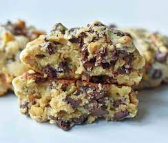

Milk Chocolate Cookies

Recipe from Modern Honey
Prep time: 10 minutes
Cook time: 11 minutes
Total time: 21 minutes
Ingredients
- 1 cup Cold Butter cut into small cubes
- 1 cup Brown Sugar
- ½ cup Sugar
- 2 Eggs
- 1 ½ cups Cake Flour
- 1 ½ cups Flour
- 1 teaspoon Cornstarch
- ¾ teaspoon Baking Soda
- ¾ teaspoon Salt
- 2cups Chocolate Chips/li>
- 2 cups Walnuts roughly chopped
Cooking Instructions
- Preheat oven to 410 degrees.
- In a large mixing bowl, cream together cold cubed butter, brown sugar, and sugar for 4 minutes or until creamy.
- Add eggs, one at a time, mixing well after each one.
- Stir in flours, cornstarch, baking soda, and salt. Mix until just combined to avoid overmixing. Stir in chocolate chips and walnuts.
- Separate dough into large balls and place on lightly colored cookie sheet. They are bigger than you think! You will fit 4 cookies on one large cookie sheet. The dough makes 8 extra large cookies.
- Bake for 9-12 minutes or until golden brown on the top. Let them rest for at least 10 minutes to set.